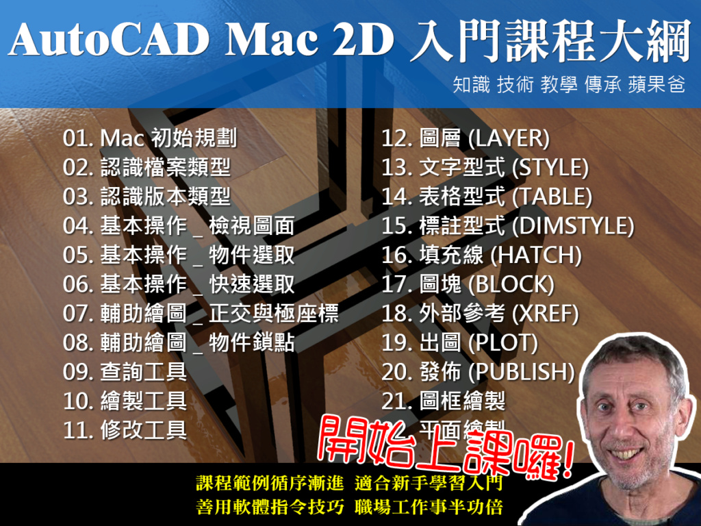
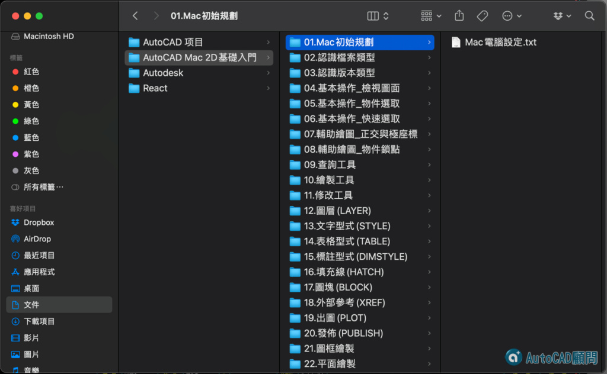

★注意：線上課程影片頻道綁定「GMAIL信箱」，透過電腦線上觀看影片時，必需要「登入GOOGLE帳戶」！
★加入線上課程 👉 https://autocad-tw.1shop.tw/cdeuyr 👈
★Mac 2D入門－範例下載 👉 https://bit.ly/47qavmW
▼函授教學主題：AutoCAD Mac 2D入門-線上課程
介紹：全新AutoCAD Mac 2D入門教學，教學課程DWG範例引導，適合新手學習入門。學習操作步驟循序漸進，有效運用軟體指令功能，未來職場工作事半功倍。
作者：Tiger&蘋果爸
版本：AutoCAD for Mac 2024
語言：中文影音教學(適用於 macOS 的 AutoCAD)
規格：課程共計有22堂範例(612分鐘)
解鎖課程：1.指令行字體大小設置, 2.掛入CAD外掛程式(贈小程式)。
註1：附有DWG範例供操作練習，還有相關教學文件筆記。
註2：如遇播放問題，可改用「彈出式視窗」全螢幕觀看影片。

☆教授軟體為AutoCAD Mac 2024版本，使用其他 AutoCAD Mac 版本也可學習（介面大同小異），而且教授的標準流程觀念都是通用的，所以學習上不會有問題，這點請大家放心，參與練習過程中有任何疑慮，請回「顧問論壇」或「FB社團」提問討論，讓你學習無後顧之憂！
👇AutoCAD Mac 2D入門示範影片👇

👇Google雲端觀看課程
https://drive.google.com/drive/folders/1eBkhbU_jQU1Cbb6hSMEjbIvtk1_BvH2u?usp=drive_link
第1堂：Mac初始規劃【05:48】
範例.Mac電腦設定
第2堂：認識檔案類型【09:01】
範例.顯示檔案副檔名及認識AutoCAD副檔名
第3堂：認識版本類型【06:36】
範例.AutoCAD版本說明
第4堂：基本操作_檢視圖面【17:43】
範例.基本認識與操作、檢視圖面細節
第5堂：基本操作_物件選取【15:30】
範例.基本指令與物件選取
第6堂：基本操作_快速選取【11:44】
範例.快速選取物件原則
第7堂：輔助繪圖_正交與極座標【19:17】
範例.正交與極座標模式操作
第8堂：輔助繪圖_物件鎖點【29:10】
範例.2.物件鎖點及鎖點追蹤
第9堂：查詢工具【20:39】
範例.查詢座標,長度及面積
第10堂：繪製工具【58:33】
範例.常用繪製指令
1.線_LINE及接合_JOIN
2.聚合線_PLINE及編輯PEDIT
3.建構線_XLINE
4.圓_CIRCLE
5.矩形_RECTANG
6.多邊形_POLYGON
7.弧_ARC
8.橢圓_ELLIPSE
9.等分_DIVIDE
10.等距_MEASURE
第11堂：修改工具【01:55:13】
範例.常用修改指令
1.修剪_TRIM及延伸_EXTEND
2.圓角_FILLET及倒角_CHAMFER
3.複製_COPY及移動_MOVE
4.分解_EXPLODE
5.偏移複製_OFFSET
6.鏡射_MIRROR
7.陣列_ARRAY
8.旋轉_ROTATE
9.比例_SCALE
10.拉伸_STRETCH
第12堂：圖層(LAYER)【26:54】
1.圖層說明(LAYER)
2.線型管理員(LINETYPE)
3.清除圖層(PURGE)
第13堂：文字型式(STYLE)【24:49】
1.文字型式說明
2.尋找及取代
3A.找不到大字體檔-忽略
3B.找不到大字體檔-指定
第14堂：表格型式(TABLE)【16:59】
1.表格_TABLE
2.表格型式說明
第15堂：標註型式(DIMSTYLE)【37:59】
1.常用標註指令
2.標註型式說明
3.基線式_連續式標註
4.快速引線_快速標註
5.標註編輯
第16堂：填充線(HATCH)【19:04】
0.建築剖面圖
0.機械剖面圖
1.填充線 HATCH
第17堂：圖塊(BLOCK)【36:52】
1.圖塊(BLOCK)概述
2.製作與插入(INSERT)圖塊
3.定義屬性(ATTDEF)
第18堂：外部參考(XREF)【19：14】
1.插入外部參考
2.現地編輯外部參考
第19堂：出圖(PLOT)【36:05】
1.模型空間出圖(MSPACE)
2.配置空間出圖(PSPACE)
第20堂：發佈(PUBLISH)【12:04】
1.圖面有頁面設置
2.圖面無頁面設置
第21堂：圖框繪製【22:54】
範例.A1圖框_841x594mm繪製
第22堂：平面繪製【49:49】
範例.教室平面範本繪製
✨未來不定期解鎖 AutoCAD for Mac 實務教學影片✨
🎀 Mac 2D入門線上課程訂購中 👉 https://autocad-tw.1shop.tw/eezm2s 👈
👇AutoCAD顧問線上課程 - 課程討論區
https://www.autocad-tw.com/f72-forum
👇AutoCAD顧問線上課程 - Q&A
https://www.autocad-tw.com/t23024-topic
👇[說明]觀看線上課程需綁定GMAIL信箱
https://www.autocad-tw.com/t22774-topic
👇[說明]線上課程下載範例步驟
https://www.autocad-tw.com/t23813-topic
👇[說明]關於線上課程影片觀看技巧
https://www.autocad-tw.com/t23814-topic
👇課程影片建議串流網速注意事項